WizardConnect
Connect to your Wizard
On your computer, open Wizard → Setup → Use Wizard on your phone, then scan the QR code it shows.
or enter the address

WizardConnect
On your computer, open Wizard → Setup → Use Wizard on your phone, then scan the QR code it shows.